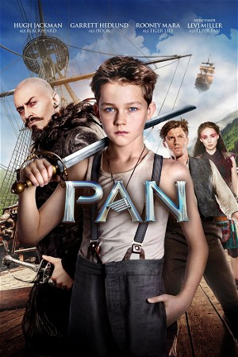

Pan (2015)
ActionAdventureFamilyFantasy
| Year | 2015 |
|---|---|
| Rating | US:PG / US:Rated PG |
| Genre | Action, Adventure, Family, Fantasy |
Living a bleak existence at a London orphanage, 12-year-old Peter finds himself whisked away to the fantastical world of Neverland. Adventure awaits as he meets new friend James Hook and the warrior Tiger Lily. They must band together to save Neverland from the ruthless pirate Blackbeard. Along the way, the rebellious and mischievous boy discovers his true destiny, becoming the hero forever known as Peter Pan.